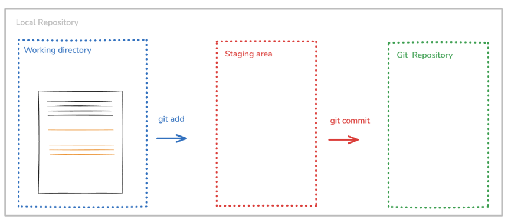
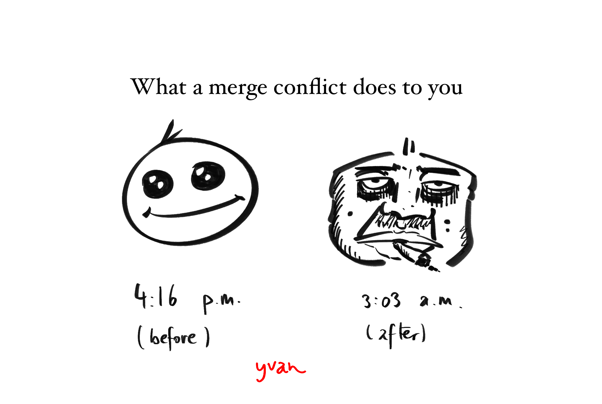

Introduction to Git
Foreword
The purpose of this second lecture is to introduce the concept of version control and the tools that are commonly used for it, namely Git and GitHub. The lecture, originally crafted by Dr. Franziska Bender, and Dr. Aurélien Sallin, covers the following topics:
- what is version control
- how to use Git for version control
- how to use GitHub for collaboration
1. Git
1.1. The Substance of Version Control
Whenever we work on projects, we often make changes to our files. Sometimes, we want to keep track of these changes, revert to previous versions, or collaborate with others without overwriting each other’s work. This is where version control systems come in! Git is a popular version control system (VCS) that allows us to manage changes to our files and collaborate with others effectively. Git is probably the most widely used VCS in the world, and it is an essential tool for any programmer or data scientist.
1.2. Intuition for Git
A project in Git is called a repository (or repo if you want to show that you know the lingo). When we start a new project, we can initialize a Git repository in our project directory. This allows us to track changes to our files and manage our project history.
# initialize a new Git repository
git initOnce we have a Git repository, we have to indicate which files we want to track. We can do this by adding files to the staging area using the git add command.
# add a file to the staging area
git add main.pyOnce we have staged our changes, we can commit them to the repository using the git commit command. A commit is like a snapshot of our project at a specific point in time. It allows us to keep track of our changes and revert to previous versions if needed. Importantly, each commit has a unique identifier (called a hash) that allows us to reference it later and is always attributed to an author and a timestamp.
# commit our changes with a message
git commit -m "Add main.py with initial code"I recommend using meaningful commit messages that describe the changes you have made. This will make it easier for you and others to understand the history of your project and the purpose of each commit. Here is the structure so far:

At any point in time, we can view our commit history using the git log command. This will show us a list of all the commits in our repository, along with their messages, authors, and timestamps. Here is an example from the current project I am working on:
commit b65ae016204690b81ffc99fae1ecdc4f55cb6dd8
Merge: 8f5b21d b258f76
Author: Yvan Richard <yvan.richard2004@gmail.com>
Date: Fri May 8 03:09:19 2026 +0200
resolve quarto render conflicts
commit 8f5b21de47a3979f8f3411ad27ba8138884c9b70
Author: Yvan Richard <yvan.richard2004@gmail.com>
Date: Fri May 8 03:04:45 2026 +0200
hash issue fix 1We can also view the changes we have made to our files using the git diff command. This will show us a line-by-line comparison of our changes, highlighting what has been added, removed, or modified. I personally do not use this command very often. One that I use extremely frequently is git status, which shows us the current state of our repository, including which files are staged, unstaged, or untracked.
# check the status of our repository
git statusand here is an example of the output (from this very project):
On branch week_02
Changes not staged for commit:
(use "git add/rm <file>..." to update what will be committed)
(use "git restore <file>..." to discard changes in working directory)
modified: lectures/week_02/summary_02.qmd
Untracked files:
(use "git add <file>..." to include in what will be committed)
assets/images/git.png
no changes added to commit (use "git add" and/or "git commit -a")1.3. Branching and Merging: A Practical Example
This example is the result of my own work and is not part of the original lecture.
Let us understand how a branch works in Git. Let us suppose that right now we only have main in our repository, which is the default branch that Git creates when we initialize a new repository. We have the following structure:
o––––––mainNow, I decide that I want to create a summary for the lecture of week 02 in lectures/week_02/summary_02.qmd. I want to work on this file without affecting the main branch, so I create a new branch called week_02:
# create a new branch called week_02 and switch to it
git switch -c week_02and now we have the following structure (I use the * symbol to indicate where we are in the schema):
o––––––main, * week_02Now let us say that I have made some changes to lectures/week_02/summary_02.qmd and I want to commit those:
# add the changes to the staging area
git add lectures/week_02/summary_02.qmd
# commit the changes with a message
git commit -m "Add summary for week 02 lecture"Now we have the following structure with the new commit on the week_02 branch, where o represents a commit and a3tf65i is the hash of the new commit:
o––––––main
\
o (a3tf65i) ––––– * week_02Let us further suppose that I have made some more changes to lectures/week_02/summary_02.qmd and I want to commit those as well:
# add the changes to the staging area
git add lectures/week_02/summary_02.qmd
# commit the changes with a message
git commit -m "Add more content to week 02 summary"Now we have the following structure with the new commit on the week_02 branch:
o––––––main
\
o (a3tf65i) ––––– o (b4g5h6i) ––––– * week_02But I realize that these changes are actually not good and I want to revert to the previous version of lectures/week_02/summary_02.qmd (i.e. the version at the previous commit). I can do this using the git restore command:
# restore the previous version of the file
git restore --source=a3tf65i lectures/week_02/summary_02.qmdIn this case, a3tf65i is the hash of the commit that we want to restore. This copies the version of lectures/week_02/summary_02.qmd from commit a3tf65i into the working directory. It does not delete commit b4g5h6i; the history remains unchanged until we commit the restored file.
o––––––main
\ . – + – + –(we take this version)– +.
\ / \
o (a3tf65i)––––– o (b4g5h6i)–––––––––––– * week_02And I can commit this change to the week_02 branch if I indeed think that the previous version is better than the current one:
# add the changes to the staging area
git add lectures/week_02/summary_02.qmd
# commit the changes with a message
git commit -m "Revert changes to week 02 summary"Now we have the following structure with the new commit on the week_02 branch:
o––––––main
\ . – + – + –(we take this version)– +.
\ / \
o (a3tf65i)––––– o (b4g5h6i)–––––––––––– o (c7h8i9j) –––– * week_02So in this case, the content of lectures/week_02/summary_02.qmd is the same as in the commit a3tf65i, but we have a new commit c7h8i9j that indicates that we have reverted the changes. This is one of the powerful features of Git: it allows us to keep track of our changes and revert to previous versions if needed, without losing any history of our project.
Now, let us further suppose that I want to style the scsss file that I am using for the website: custom.scss. I create a new branch called style to work on this:
# switch to main
git switch main
# create a new branch called style and switch to it
git switch -c styleNow we have the following structure:
o––––––main, * style
\ . – + – + –(we take this version)– +.
\ / \
o (a3tf65i)––––– o (b4g5h6i)–––––––––––– o (c7h8i9j) –––– week_02I make some changes to custom.scss and commit those:
# add the changes to the staging area
git add custom.scss
# commit the changes with a message
git commit -m "Add custom styles to the website"Now we have the following structure with the new commit on the style branch:
o (d8i9j0k) –––– * style
/
o––––––main
\ . – + – + –(we take this version)– +.
\ / \
o (a3tf65i)––––– o (b4g5h6i)–––––––––––– o (c7h8i9j) –––– week_02Now that the style changes are ready, I want to merge the style branch into the main branch. This will allow me to have the new styles in the main branch and make them available for everyone who is using the main branch. I can do this using the git merge command:
# switch to the main branch
git switch main
# merge the style branch into main
git merge styleand the structure will now look like this (no new commit is created because we are doing a fast-forward merge, which simply moves the main branch pointer to the same commit as style. This is possible because there are no new commits on main since we branched off style):
o (d8i9j0k) –––– style, * main
/
o
\ . – + – + –(we take this version)– +.
\ / \
o (a3tf65i)––––– o (b4g5h6i)–––––––––––– o (c7h8i9j) –––– week_02I can delete the style branch after merging it if I no longer need it:
# delete the style branch
git branch -d styleNow we have the following structure and we see that the two branches have different commits!
o ––––– o (d8i9j0k) –––– * main
\
o (a3tf65i) ––––– o (b4g5h6i) ––––– o (c7h8i9j) –––– week_02Now, I also want to merge the week_02 branch back into main, because the week 02 summary is ready and should become part of the main version of the project. At this point, the situation is different from the previous merge. The main branch contains the style commit d8i9j0k, while the week_02 branch contains the commits related to the lecture summary. Therefore, the two branches have diverged: each branch contains work that the other branch does not yet have.
To merge week_02 into main, I first make sure that I am on main:
# switch to the main branch
git switch main
# merge the week_02 branch into main
git merge week_02If there are no conflicts, Git will create a new merge commit. This merge commit combines the history of main and week_02. The structure will then look like this:
o ––––– o (d8i9j0k) ––––––––––––––––––––––––––– o (m1n2o3p) –––– * main
\ /
o (a3tf65i) ––––– o (b4g5h6i) ––––– o (c7h8i9j) –––– week_02Here, m1n2o3p is the merge commit. It has two parents: the latest commit on main, namely d8i9j0k, and the latest commit on week_02, namely c7h8i9j. This is why the diagram shows the two branches joining together. After the merge, main contains both sets of changes: the style changes from custom.scss and the week 02 summary from lectures/week_02/summary_02.qmd. If I no longer need the week_02 branch, I can delete it:
# delete the week_02 branch
git branch -d week_02After deleting the branch pointer, the commits are not deleted. They remain part of the history of main through the merge commit. The final structure is:
o ––––– o (d8i9j0k) ––––––––––––––––––––––––––– o (m1n2o3p) –––– * main
\ /
o (a3tf65i) ––––– o (b4g5h6i) ––––– o (c7h8i9j)That was quite a bit of Git!

2. Self-Study
2.1. Additional Git Commands
Here are some additional Git commands that can be useful when working with Git:
| Command | Description |
|---|---|
git diff --staged |
Show the changes that are staged for the next commit |
git log --oneline |
Show the commit history in a compact format |
git log --graph |
Show the commit history as a graph |
git reset <filename> |
Unstage a file (remove it from the staging area) |
git restore <filename> |
Discard changes to a file in the working directory |
git restore --source=<commit> <filename> |
Restore a file to the version in a specific commit |
git branch |
List all branches in the repository |
2.2. The Anatomy of a Git Command
At first, I found Git commands to be quite cryptic. However, I have come to understand that they are actually quite intuitive once you understand the underlying structure:
git <command> [options/flags] [arguments]gitis the name of the version control system we are using.<command>is the specific action we want to perform (e.g.,add,commit,merge, etc.).[options/flags]are additional parameters that modify the behavior of the command (e.g.,-mfor commit messages,--stagedfor showing staged changes, etc.).[arguments]are the specific files, branches, or commits that the command operates on (e.g.,main.py,week_02,a3tf65i, etc.).
Importantly, we can always get help on any Git command by using the -h or --help flag:
git <command> -hI find git <command> --help to be more informative than git <command> -h, but both work.
2.3. Detached HEAD State
When we check out a specific commit (instead of a branch), we enter what is called a “detached HEAD” state. This means that we are not on any branch, but rather on a specific commit. In this state, if we make changes and commit them, those commits will not be part of any branch and can be easily lost if we switch to another branch. Therefore, it is generally not recommended to work in a detached HEAD state unless you know what you are doing.